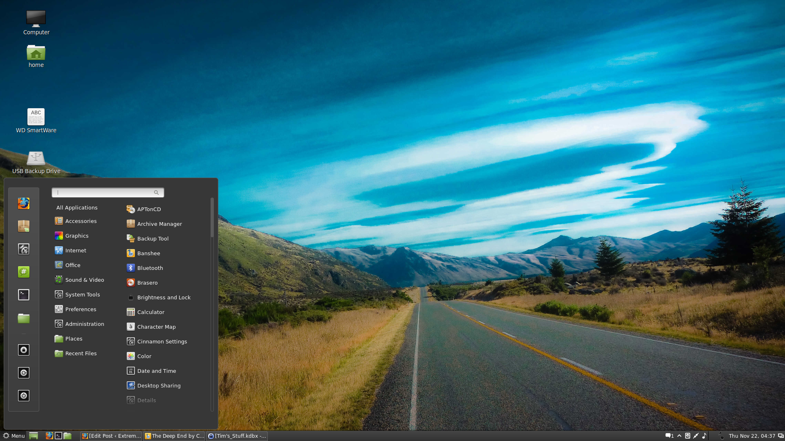

¿Qué es Linux Mint?
Linux Mint es una de las distribuciones de Linux más populares, conocida por su facilidad de uso, estabilidad y por ofrecer un entorno tradicional ideal para usuarios que vienen de Windows.
Requisitos y Sabores Principales
Entornos de escritorio disponibles:
- Cinnamon: El más moderno, completo y principal de la distribución.
- MATE: Opción clásica, ligera y muy estable.
- XFCE: Diseñado para consumir la menor cantidad de memoria RAM posible.
Requisitos de Sistema Recomendados
| Componente | Requisito Mínimo | Requisito Recomendado |
|---|---|---|
| Memoria RAM | 2 GB | 4 GB |
| Espacio en Disco | 20 GB | 40 GB |
| Resolución | 1024 x 768(HD) | 1920 x 1080 (Full HD) |
